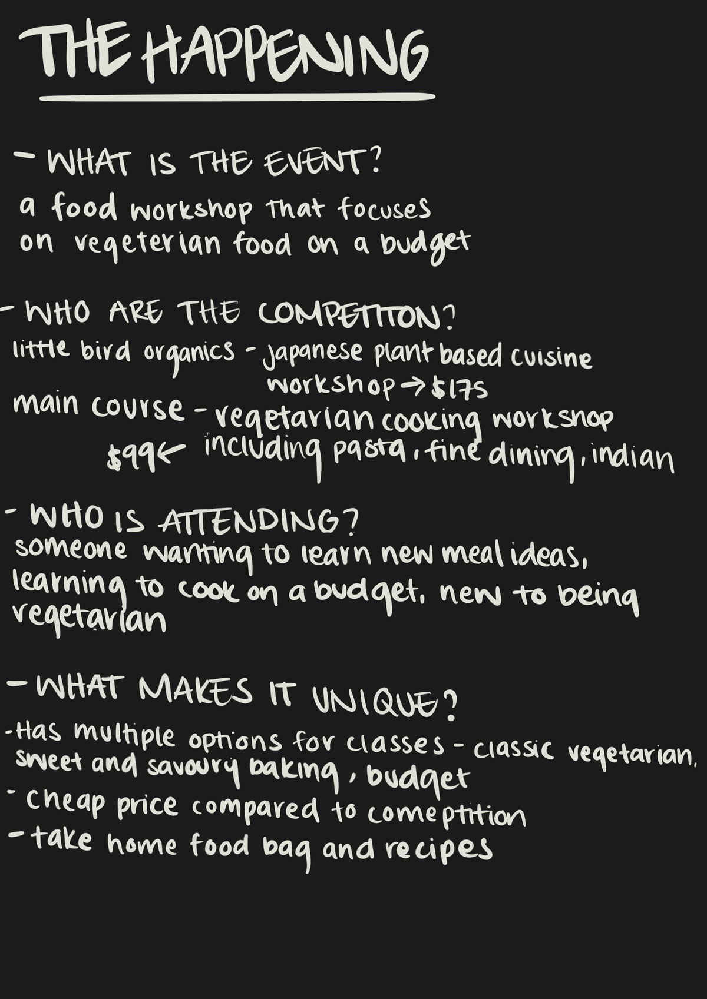
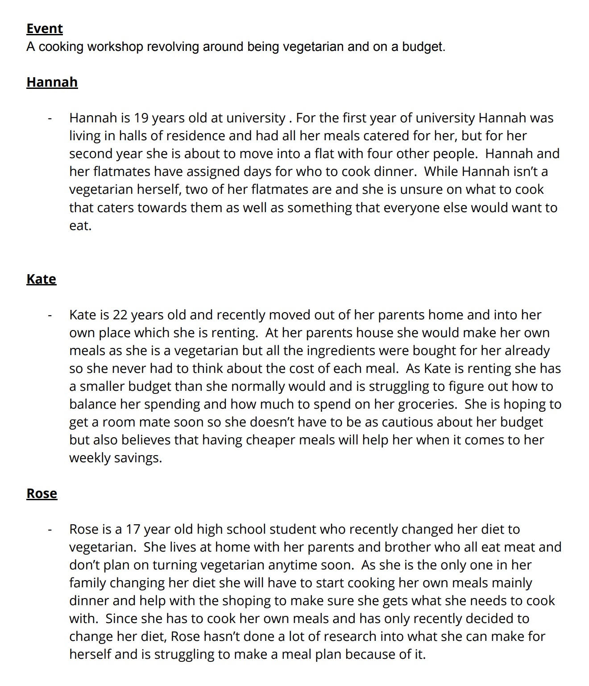
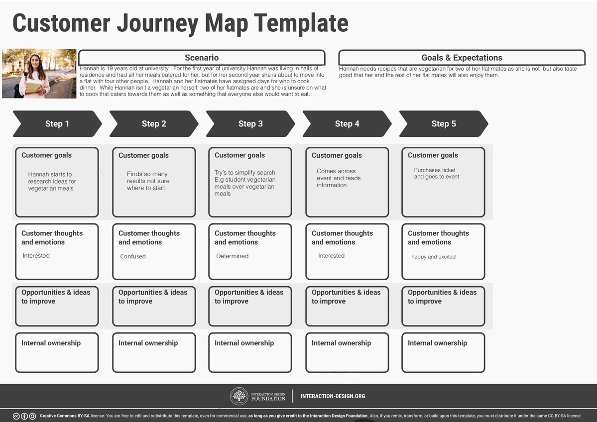
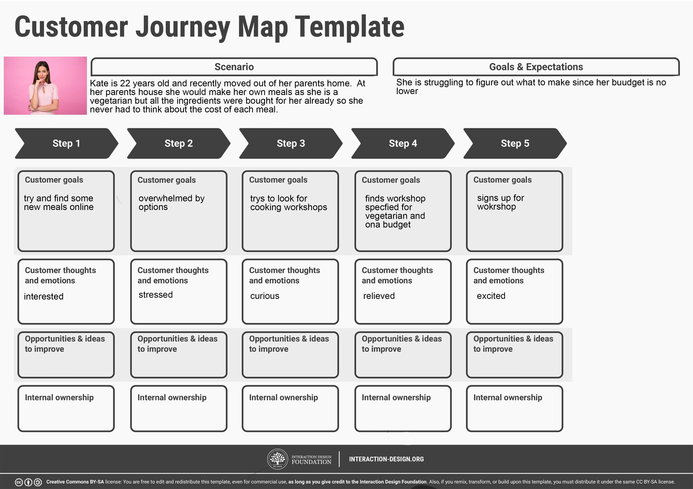
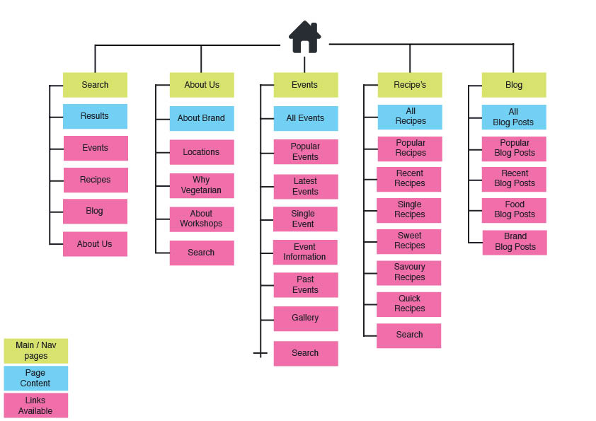
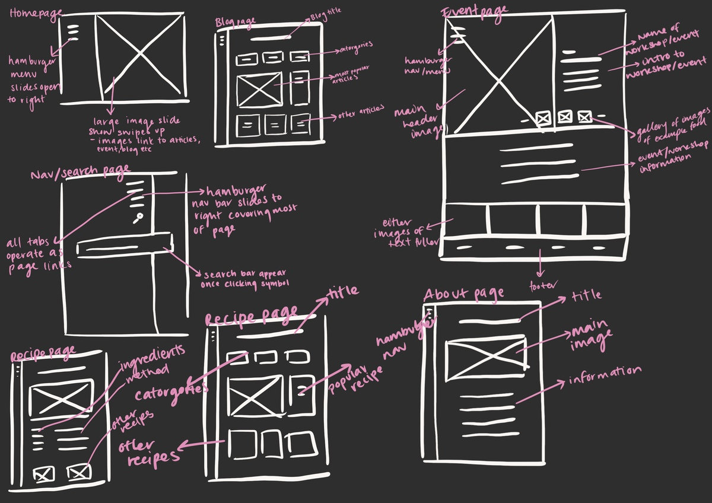

HOME
SH - FT
THE HAPPENING
THREE
FOUR
THE HAPPENING




Field Review
Field Reviews
Plenty Full stylescape
Plenty Full Stylescape


Plenty Full Lo Fi
Plenty Full Lofi
Plenty Full Hi Fi
Plenty Full Hi Fi
UPDATED stylescape
updated stylescape
Final reflection
Final Reflection